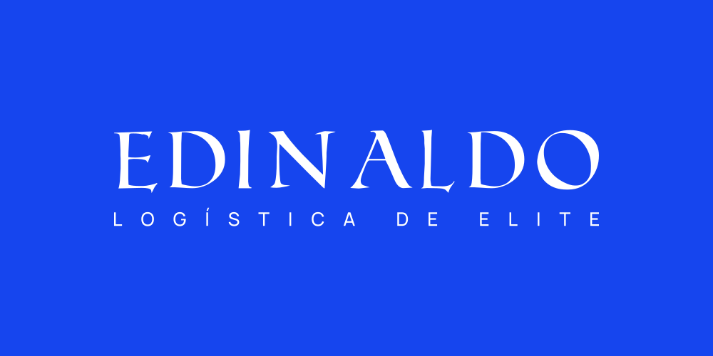
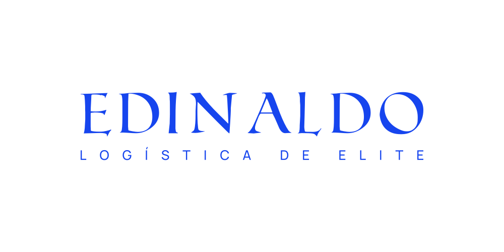
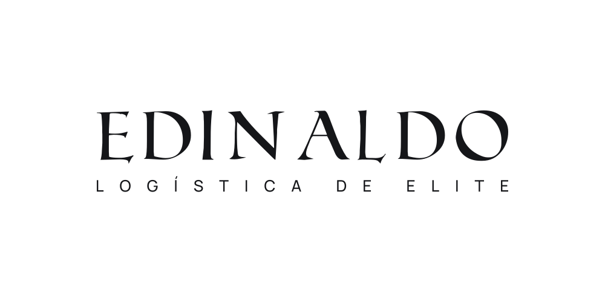
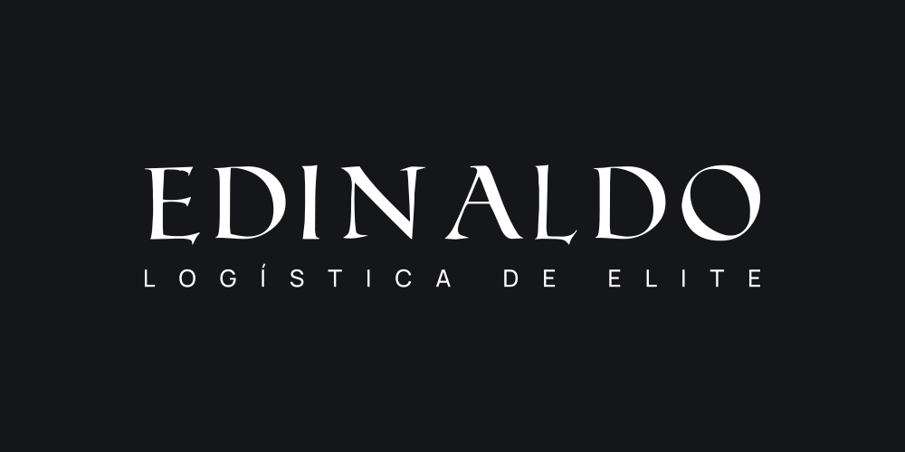

EDINALDO / IDENTIDADE TIPOGRÁFICA
Uma assinatura. Quatro aplicações.
Roman SD + Manrope
Azul royal #1645EE

01 / VERSÃO PRINCIPAL
Branco sobre azul royal

02 / POSITIVO
Azul royal sobre branco

03 / MONOCROMÁTICO POSITIVO
Preto sobre branco

04 / MONOCROMÁTICO NEGATIVO
Branco sobre preto